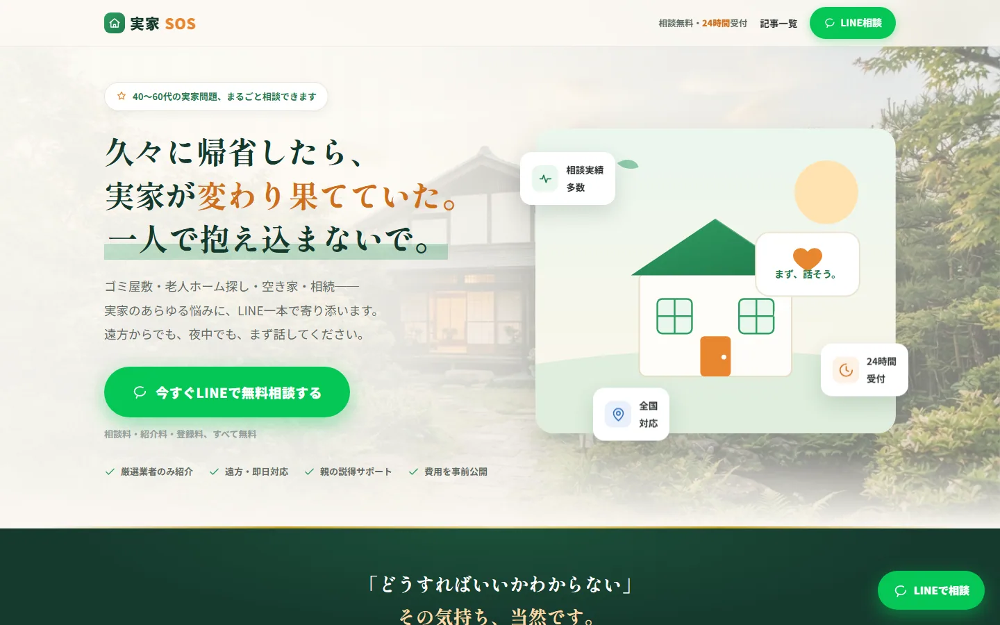
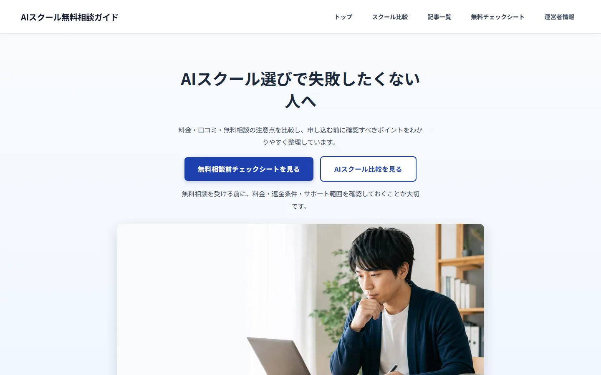
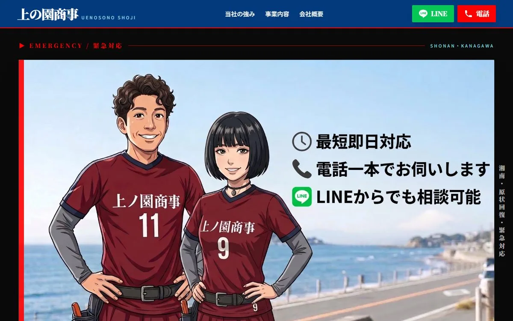
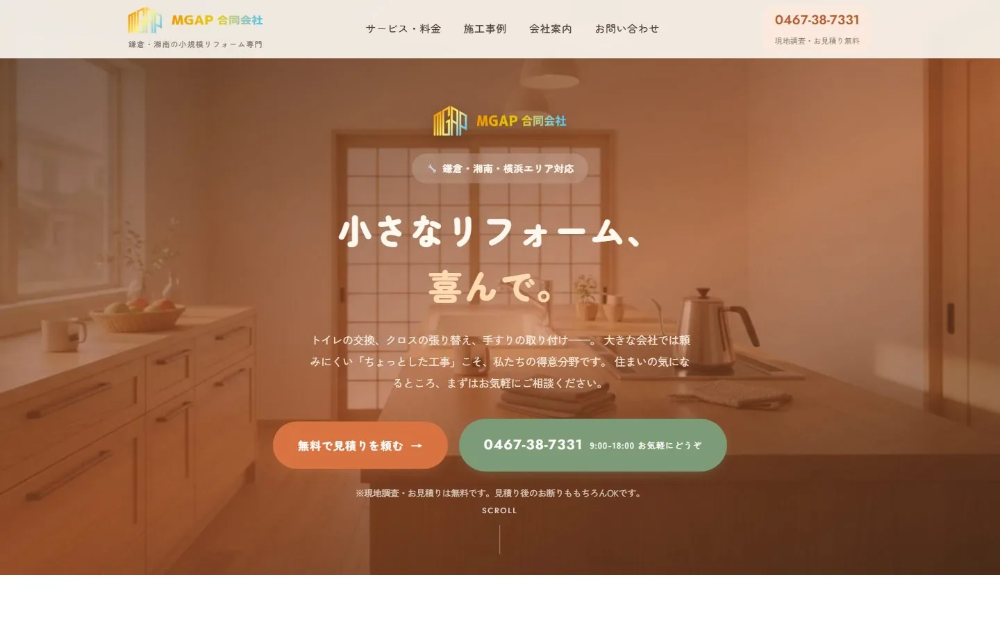
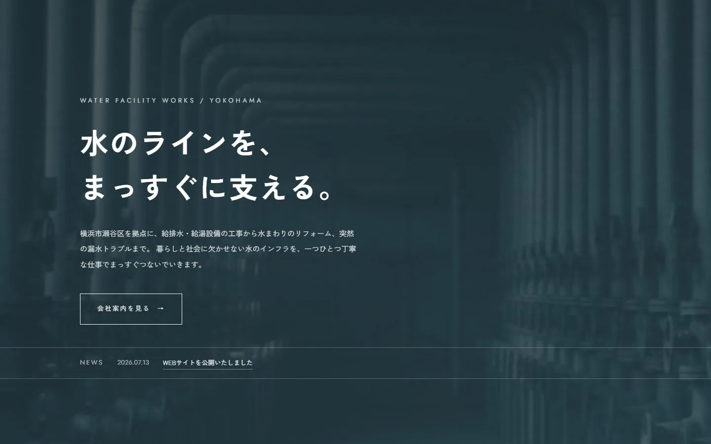
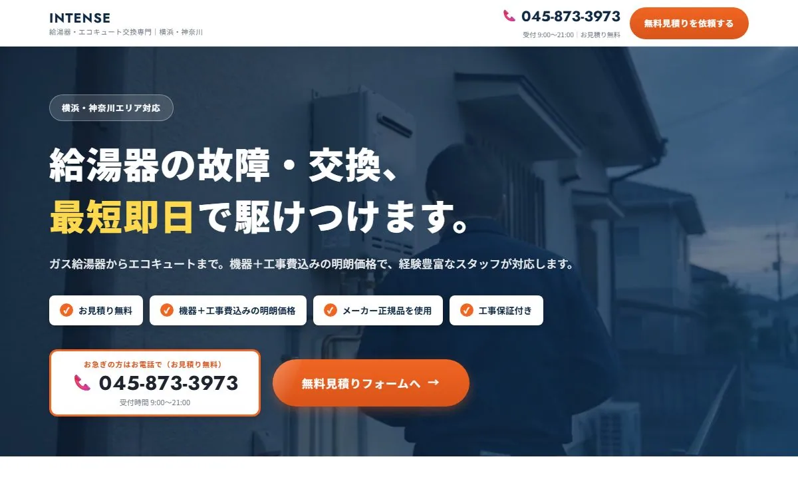
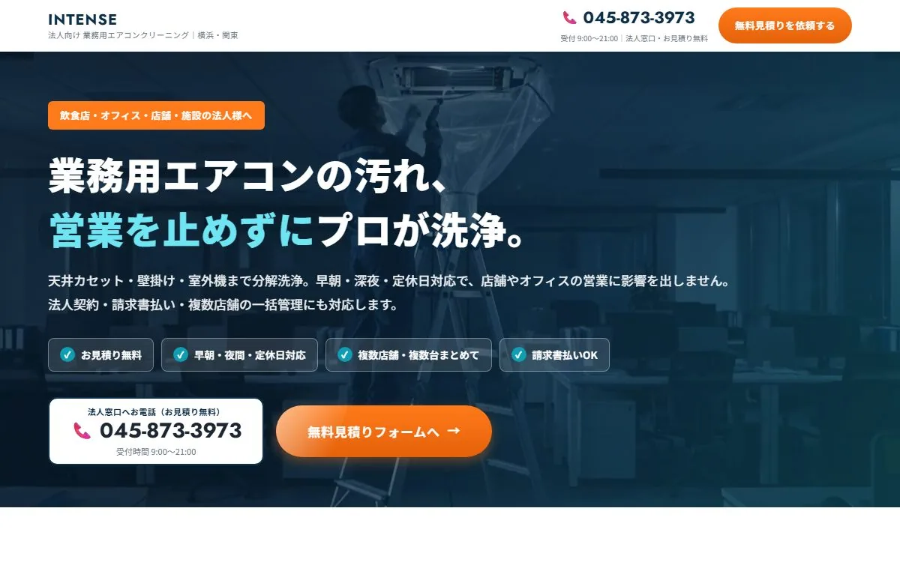

地域事業に強い
店舗、工事、緊急対応、法人向けサービスなど、検索した人が急いで判断する業種を中心に設計しています。
Selected Works
課題も、顧客も、必要な行動も違う9つの制作プロジェクト。ページをきれいに整えるだけでなく、「誰に何を伝え、次にどこへ進んでもらうか」から設計しています。
※掲載事例には、株式会社MG ActPraiseが運営する自社プロジェクトを含みます。成果数値ではなく、企画・構成・実装内容をご確認いただくための事例です。一部の事例は、掲載条件によりリンクを掲載していません。
Sales Evidence
店舗、工事、緊急対応、法人向けサービスなど、検索した人が急いで判断する業種を中心に設計しています。
見た目からではなく、電話、LINE、フォーム、記事閲覧、デモ視聴など、次の行動を先に決めて構成します。
料金、対応エリア、流れ、FAQ、会社情報、構造化データを整え、初回相談前の不安を減らします。
Live Projects
 VIEW LIVE SITE ↗
VIEW LIVE SITE ↗
CASE 01 / LOCAL & TOURISM
店舗サイトを、江の島観光の入口へ。
料金や設備だけを並べる店舗ページから、江の島・鎌倉・江ノ電観光の記事を持つ地域メディア型サイトへ拡張。観光客には「休憩・雨・暑さ・空き時間」の使い方を提案し、地域客には料金・駐車場・設備を分かりやすく伝える構成です。
CASE 02 / NEW SERVICE LP
説明しにくい新サービスを、体験できるLPへ。
AIを活用したオリジナルソングとサプライズMV制作サービス。言葉だけでは完成像が伝わりにくいため、実際のデモ曲とMVを中心に据え、用途・制作の流れ・料金・権利の注意点・相談導線までを一つのストーリーにまとめました。

VIEW LIVE SITE ↗CASE 03 / CONSULTATION LEAD
重い悩みを、最初の相談まで軽くする。
ゴミ屋敷、老人ホーム、空き家、相続など、家族だけでは整理しにくい実家問題の相談サービス。不安を煽るのではなく、状況別の選択肢、相談後の流れ、費用への疑問を先回りして示し、LINE相談へ進みやすい導線を設計しています。

VIEW LIVE MEDIA ↗CASE 04 / CONTENT MEDIA
比較の迷いを、相談前の判断材料に変える。
AIスクールやプログラミングスクールを検討する人向けの比較情報サイト。料金や評判を並べるだけでなく、失敗しやすい選び方、無料相談で確認する項目、検討前のチェックシートへつなぎ、読者が自分の基準を持てる構成にしています。

VIEW LIVE SITE ↗CASE 05 / LOCAL SERVICE
「すぐ来てほしい」を、電話一本の距離まで縮める。
湘南エリアの原状回復工事・小規模リフォーム。大家・管理会社と、一般のご家庭・店舗という性質の異なる2つの顧客を、1ページで受けとめる構成にしています。退去日が迫った工事や突然の設備トラブルなど緊急度の高い相談を想定し、ページのどの位置からでも電話とLINEへ進める固定導線を設置しました。

CASE 06 / RENOVATION
「頼みにくい小さな工事」を、症状から探せるようにする。
湘南・鎌倉・横浜エリアのリフォームとハウスクリーニング。トイレ交換、水漏れ、壁紙の傷み、換気扇の汚れなど、大きな会社には頼みにくい工事を対象にしています。相談する側は工事の名前を知らないことが多いため、サービス分類より手前に「よくあるお困りごと」を置き、症状から該当ページへ入れる導線にしました。相談から引き渡しまでの5段階と対応エリアを先に示し、連絡手段は電話・LINE・フォームの3系統を用意しています。

CASE 07 / WATER FACILITY
生活インフラの仕事を、静かな説得力で見せる。
横浜市瀬谷区を拠点とする給排水・給湯設備工事の会社サイト。値引きや勢いで訴えるのではなく、配管設備そのものを主役に据えたビジュアルと余白の広い構成で、インフラを預ける相手としての信頼感を伝える設計にしています。会社案内・サービス・実績・お知らせを分け、法人が取引可否を判断する材料を整理しました。

CASE 08 / URGENT REPLACEMENT
「お湯が出ない」を、最短距離で電話につなぐ。
給湯器・エコキュート交換の専門LP。故障は緊急性が高く、比較検討にかけられる時間が短いという前提で構成しました。ファーストビューで「最短即日」と対応エリアを示し、見積り無料・機器＋工事費込みの明朗価格・メーカー正規品・工事保証の4点を並べて不安を先に潰します。電話とフォームを同列に置き、急ぐ人と検討したい人の両方を受けられるようにしました。

CASE 09 / B2B SERVICE
同じ会社でも、法人と個人では刺さる条件が違う。
飲食店・オフィス・店舗・施設向けの業務用エアコンクリーニングLP。CASE 08と同じ会社ですが、顧客も判断基準も異なるため、訴求を作り分けています。早朝・深夜・定休日対応、複数店舗・複数台の一括管理、請求書払いといった法人特有の条件を前面に出し、稟議に必要な情報を先に示す構成にしました。
What To Look At
誰のためのページか、何を頼めるのか、次に何を見ればよいかが短時間で分かるか。
料金、実例、運営者、流れ、FAQなど、業種ごとに異なる迷いへ答えているか。
電話、LINE、メール、記事閲覧、デモ視聴など、心理段階に合うCTAを置いているか。
Related Service
構成・コピー・実装までの制作範囲と、問い合わせまでの道筋を改善する考え方をまとめています。
Your Project
「何を載せるか」が決まっていなくても構いません。今あるサイト、SNS、チラシ、サービス資料から、相談につながる順番を一緒に整理します。